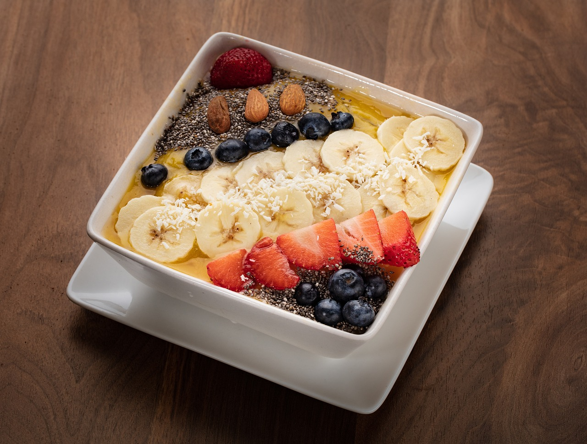

NEW 레시피

신선한 샐러드
겨울철에 딱 맞는 신선한 채소와 과일로 만든 샐러드입니다. 가벼운 점심으로 추천합니다.

새우 파스타
크림 소스와 치킨이 어우러진 알프레도 파스타입니다. 풍부한 맛과 부드러운 식감이 특징입니다.

비건 스무디 볼
과일과 채소로 만든 건강한 비건 스무디 볼입니다. 아침 식사나 간식으로 좋습니다.

소고기 불고기
달콤하고 매콤한 양념으로 조리한 소고기 불고기입니다. 밥과 함께 즐기기 좋습니다.

치즈버거
홈메이드 패티와 신선한 채소로 만든 치즈버거입니다. 간편하면서도 맛있는 한 끼로 제격입니다.